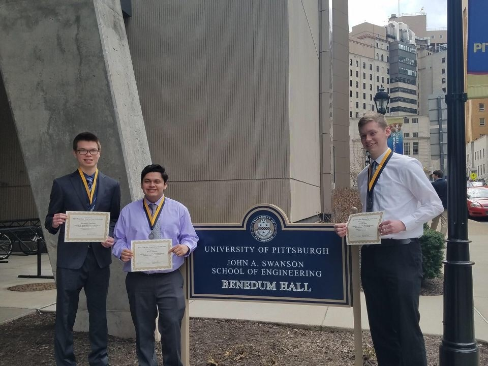
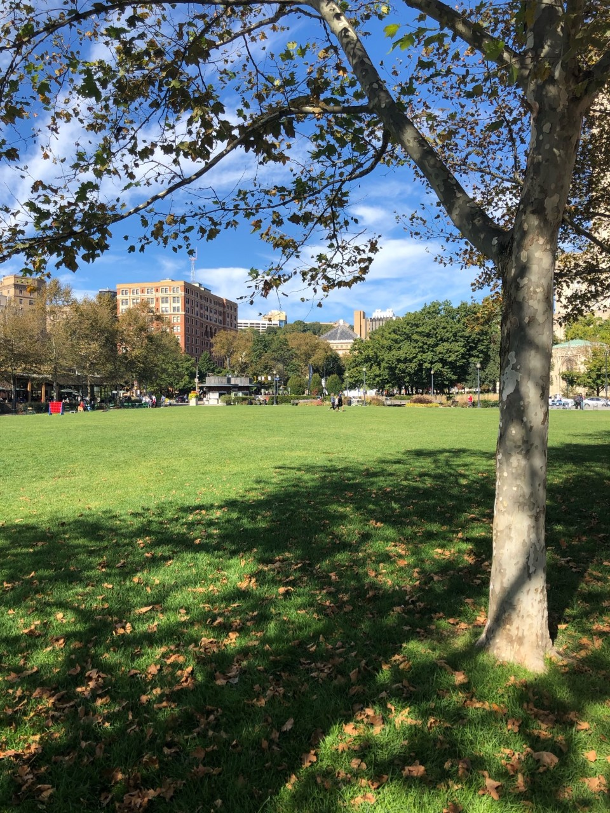

I am Logan Dyer
And I Study Environmental Engineering
Field or Career
Environmental Engineering is a branch field of engineering concerning itself with the overall protection of people from possible negative environmental effects, as well as creating and developing ways to improve environmental quality in the world around us. Although not an environmental engineer himself, my father was my main inspiration for choosing this overall field of study. I began my internship with his company, Veolia North America, during the summer of 2019, and was prepared for my second rotation this past summer until COVID ceased all hiring. Through modern environmental engineering practices, I've become interested in studying ways to limit fossil fuel usage and create a better tomorrow.
Family and Home
Family to me are those willing to provide support and love, no matter the circumstances. They have encouraged me to believe in myself and to aim to improve each and every day. Although I consider my immediate family anyone sharing blood relation, because my parents are both divorced and remarried, family to me means more than that. Family to me includes; parents, step-parents, grandparents, step-grandparents, aunts, uncles, cousins, and even some of my closest friends throughout my life.
Going back to the topic of multiple families, I consider that "Home is where the heart is." Although I grew up in Mechanicsburg, PA, I switched between my parents houses each week and spent time with both of them. As a result, I never considered myself to have one discrete home, but more or less two. Being able to go back and forth has given me the opportunity to expand my career goals and explore jobs in both the Harrisburg and Philadelphia areas, all while being able to live with my parents during the summer months when I am not attending Pitt.
Entertainment
Ever since I was a little kid, I was very much involved in extracurricular activities including sports. I've participated in skiing, soccer, basketball, and for a short amount of time, baseball. Growing up, one of my all time favorite movies was The Mighty Ducks. This story follows a group of young "rag tag" hockey players coached by an ex-player sentenced to community service. In the story, the group learns to win and lose as a team and develop the famous motto "Ducks Fly Together." Throughout my life, sports have gone a long way in teaching me the importance of teamwork both on and off the court/field. These skills have become increasingly more valuable as I begin to transition into a career in the field of engineering. Here, several different trained professionals, from varying branches and areas of expertise, are forced to work together to solve a wide range of problems on a daily basis. Without the proper teamwork and communication skills, work is hard to accomplish and could lead to drastic consequences if deadlines are missed.
Community
Before heading off to Pitt freshman year, I would have defined my community as the greater Mechanicsburg area. Although not a very large town, it was where I was born and raised and I got to know a great number of people over the years. However, over the past two years in Pittsburgh, I have developed relationships through clubs and academics that have allowed me to broaden that perspective. For example, through Pitt soccer talk, I have begun to meet more people who share my love for soccer. Through AAEES, American Academy of Environmental Engineers and Scientists, this being my first year on the board, I was able to meet upperclassmen and receive advice on the ups and downs in the engineering department. These opportunities have allowed me to see continued success in my time at this University as a result of shared interests, attitudes, and/or goals in life. I believe a community is not fixed, and much like the comment tag, can drift.

School
As stated above, I was born and raised in Mechanicsburg, PA. I graduated from Mechanicsburg Area Senior High School in 2018 and began attending Pitt in the fall. As a freshman engineer at Pitt, you are forced to come in undecided, and you make your department selection following the end of your freshman year. Coming in, I knew I wanted to pursue environmental engineering and my decision was unswayed.
As an upcoming engineering graduate, I believe some of the best "schooling" can come from on-the-job experience. During the summer of 2019, I worked as an intern at Veolia North America, particularly in the Hazardous Waste division. I was able to receive advice from employees in all lengths of their careers, from recent graduates to higher level managers who had worked their way up in the company. Therefore, it is important to understand that even after graduation, we will continue to learn and develop as we dive deeper into our respective fields of study.

generated by the Pitt Fuego
“Why make a spark when you can light a fire?